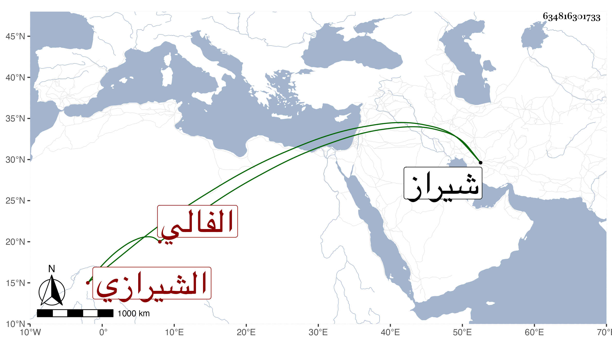

0902Sakhawi.DawLamic.ITO20230111-ara1.EIS1600.634816301733
Biography ID: 634816301733
إبراهيم بن مكرم كمحمد بن إبراهيم بن يحيى بن إبراهيم بن مكرم العز بن السراج الفالي الشيرازي وفال بالفاء بلدة من عملها بينهما عشرة أيام الشافعي والد العلاء محمد الآتي من بيت علم اشتغل على أبيه ثم على ابن عمه الجمال إسحاق بن يحيى الآتي كل منهما ثم ارتحل إلى شيراز فأخذ عن أئمتها وقرأ المفتاح للسكاكي في علم المعاني والبيان وبعض شرحه على ولد الشارح الشمس محمد بن السيد الجرجاني وأخذ البخاري وغيره عن الصلاح خليل الأقفهسي وحج وبرع في الفقه وأصوله والعربية والتفسير والمنطق وصار مشارا إليه في تحقيق المعاني والبيان والكشاف فأقبل على التدريس والإفتاء وتخرج به الفضلاء ومنهم قريبه وصهره نعمة الله الآتي كل ذلك مع الاجتهاد في العبادة والحرص على الجماعة والأعراض عن الدنيا وأهلها والإقبال على الآخرة حتى مات في يوم الجمعة بعد فراغ الإمام من صلاة الجمعة رابع جمادى الآخرة سنة أربع وسبعين رحمه الله . ومكرم الأعلى في نسبه هو خال صفي الدين مسعود والد القطب محمد شارح اللباب والتقريب والكشاف . أفادنيها ابنه وسبطه .
